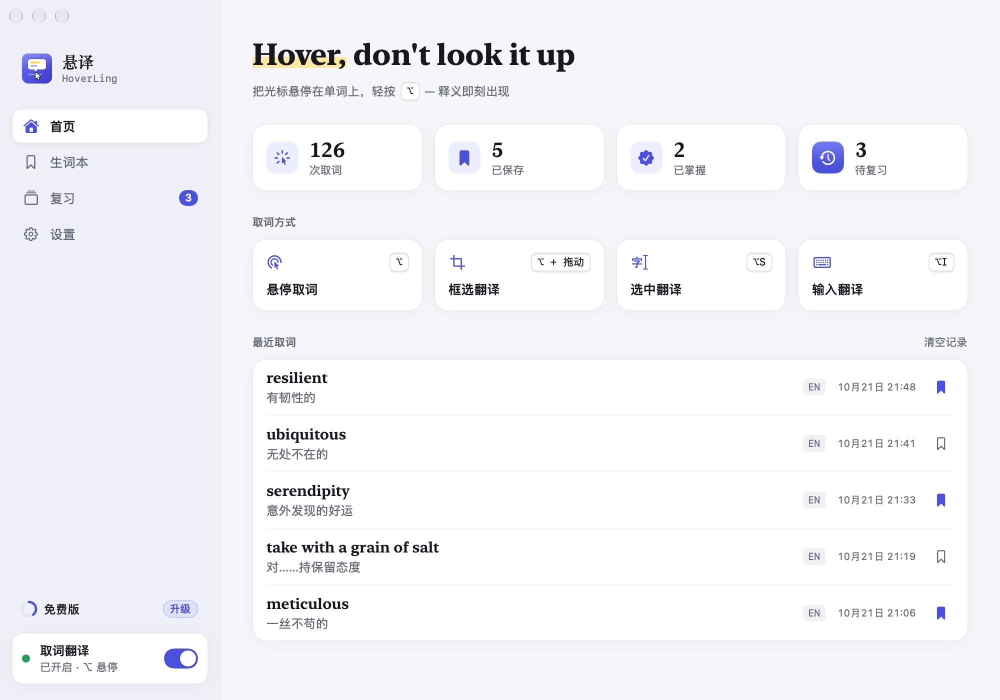
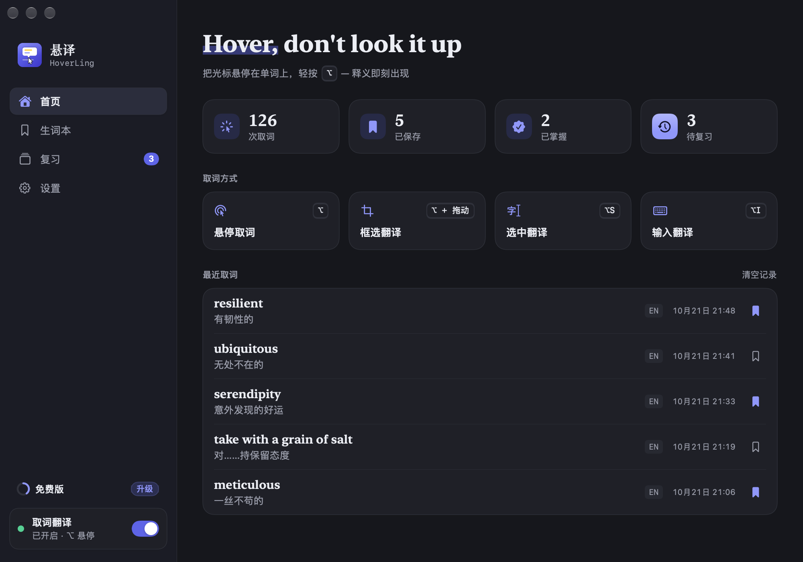
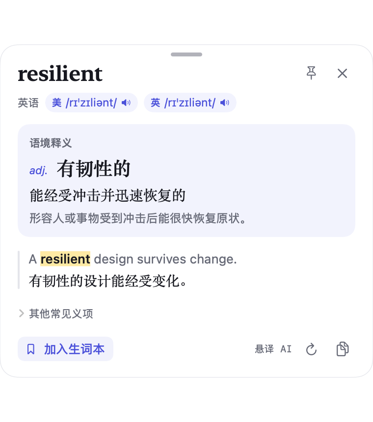
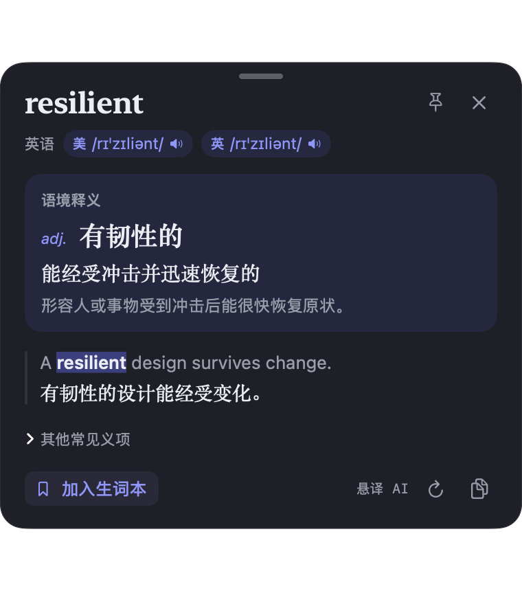
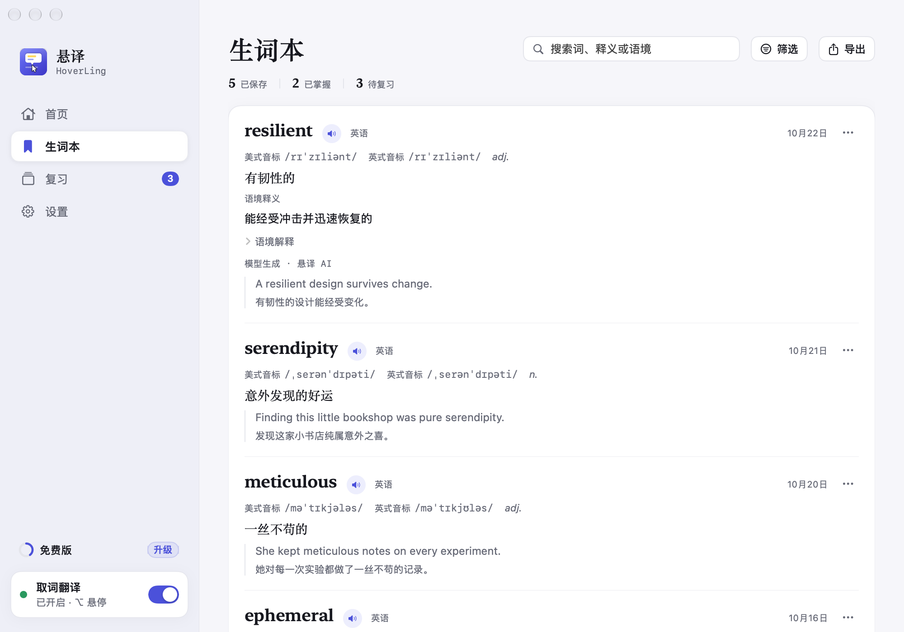
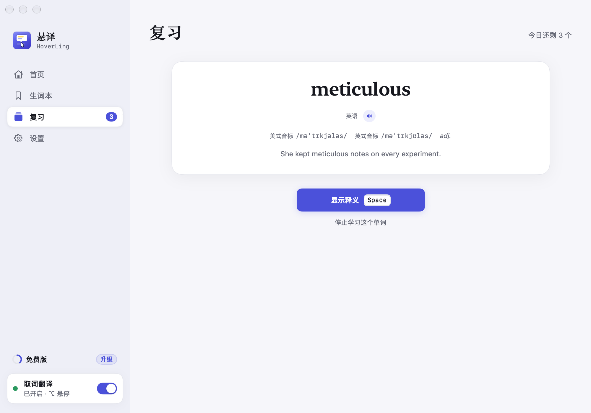
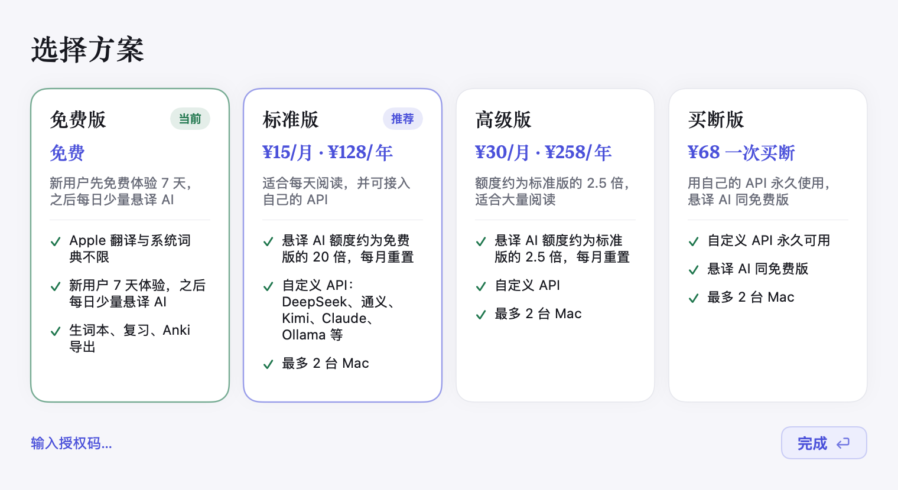

resilient
语境释义
悬译 AIadj.有韧性的
说好的读者碰到生词不会被打断，很快就能回到阅读里。
词典
英汉词典 · macOSadj.有弹性的；能复原的；适应力强的
Good readers are resilient.
好的读者有韧性。
悬译 HoverLing · Mac 阅读助手
把鼠标停在单词上，轻按 ⌥，释义就出现在旁边。网页、PDF、App 界面、图片里的文字，指向就能翻，不用复制，也不用切换窗口。
Good readers are . They don’t stop at every unfamiliar word. They glance at its meaning and keep the of the argument . Over time, these small into a vocabulary of their own.
语境释义
悬译 AIadj.有韧性的
说好的读者碰到生词不会被打断，很快就能回到阅读里。
词典
英汉词典 · macOSadj.有弹性的；能复原的；适应力强的
Good readers are resilient.
好的读者有韧性。
语境释义
悬译 AIn.思路，脉络
the thread of the argument 指论证的思路，这里说查完词还能接上前文。
词典
英汉词典 · macOSn.线；（故事、论证等的）脉络，思路
They glance at its meaning and keep the thread of the argument intact.
他们看一眼词义，论证的思路始终连贯。
语境释义
悬译 AIadj.完整的，没有中断的
keep … intact 是让（思路）保持完整，不被打断。
词典
英汉词典 · macOSadj.完好无损的；未受影响的
They glance at its meaning and keep the thread of the argument intact.
他们看一眼词义，论证的思路始终连贯。
语境释义
悬译 AIn.小小的绕行
把每次停下来查词，比作阅读途中短暂地绕一下路。
词典
英汉词典 · macOSn.绕行的路；绕道；迂回路线
Over time, these small detours compound into a vocabulary of their own.
日积月累，这些小小的绕行汇成自己的词汇。
语境释义
悬译 AIv.逐渐累积
compound into 是一点点叠加成，像利滚利一样越积越多。
词典
英汉词典 · macOSv.使加重；使复杂化；按复利计算
Over time, these small detours compound into a vocabulary of their own.
日积月累，这些小小的绕行汇成自己的词汇。
网页演示：指针移到虚线单词上。网页演示：点一下虚线单词。在 Mac 上是指向单词后轻按 ⌥。卡片为预置示例。
取词方式
单词、整段、选中的文字，或者你自己输入的一句话，都有对应的快捷键。
音标、词性和词典释义即时显示，AI 再补充这个词在当前句子里的意思。
截图在本机识别，折行和分栏会整理成通顺的段落再翻译。
在任意 App 里选中一段文字，直接翻译。
打开输入窗，输入或粘贴文字，按 Return 翻译。
快捷键都可以在设置里修改，也能一键恢复默认。


主窗口截图为什么选悬译
本机词典毫秒级出结果。文字识别也在本机完成，并常驻预热，按下快捷键就开始。
AI 结合所在的句子解释词义，不只给词典义项。框选的文字会先整理成通顺的段落，再翻译。
Apple 系统翻译免费，在本机完成。付费方案的悬译 AI 开箱即用，不用自己申请 API 密钥；额度用完自动改用 Apple 翻译，继续可用。
一键加入生词本，连同原句一起保存。按遗忘曲线安排复习，可以导出 Anki 或 CSV。
截图只在本机识别，不保存，不上传。用悬译 AI 时只发送识别出的文字和附近上下文，服务器不保存。没有账号，没有统计分析，没有广告。详见隐私政策。


取词卡片截图
生词本截图
复习截图AI 服务
新安装默认使用内置的悬译 AI。想用别的服务，付费方案可以填自己的 API 密钥。
内置 · 默认
由 DeepSeek 提供，不用申请密钥。文字经我们的服务器转发给 DeepSeek，服务器不保存、不记录翻译文字。
macOS 自带
免费，在本机完成，所有方案不限次数。悬译 AI 额度用完时会自动改用它。
每个服务的密钥单独保存在本机钥匙串，不同步。文字用你自己的密钥直接发给你选的服务商，不经过我们的服务器。
国内服务
海外服务
本机与自定义
方案与价格
所有方案都包含 Apple 翻译、系统词典、生词本、复习和 Anki 导出。
免费无需授权码
新用户先免费体验 7 天，之后每日少量悬译 AI。
¥128/年或 ¥15/月
适合每天阅读，并可接入自己的 API。
¥258/年或 ¥30/月
额度约为标准版的 2.5 倍，适合大量阅读。
¥68一次买断
授权不过期，用自己的 API，悬译 AI 同免费版。
获取授权码
在小红书搜索「悬译」，私信获取授权码。
打开「设置 → 套餐与授权」
把授权码粘贴进去即可，前后的中文说明会被自动忽略。
点「激活」
几秒完成。换电脑时先在旧电脑移除授权，释放设备名额。

方案页截图常见问题
词典、文字识别和 Apple 翻译在本机完成；只有使用 AI 大模型时需要联网。Apple 翻译初次用某种语言时，系统可能会先下载语言包。
词典释义适用于英译中，使用 macOS 自带的牛津英汉词典（如未下载，可在「词典」App 设置中勾选）。
不需要。内置的悬译 AI（DeepSeek）开箱即用；付费方案还可以填自己的密钥。
拿到授权码后，打开「设置 → 套餐与授权」，粘贴授权码，点「激活」，几秒完成。
先在旧电脑的「设置 → 套餐与授权」移除授权，释放设备名额，再在新电脑激活。遇到问题请联系 [邮箱 / 微信]。
App 里用一个小圆环显示本期用量，不显示次数。指针放上去可以看到百分比和重置时间。额度用完会自动改用 Apple 翻译，卡片上会出现「查看方案」。
「辅助功能」用于响应快捷键、读取选中的文字；「屏幕录制」用于截取指针附近的文字。在 App 里点「打开系统设置…」即可跳转。从菜单栏打开「输入翻译…」不需要这两项权限；全局快捷键（包括 ⌥I）需要「辅助功能」。
截图只在本机内存中识别，不保存到磁盘，也不上传。使用悬译 AI 时，识别出的文字和附近的上下文会经我们的服务器转发给 DeepSeek，服务器不保存、不记录翻译文字。详见隐私政策。
[退款规则]
[Windows 版状态]